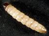
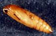

| Home |
| SUGARCANE |
PRIMARY STORAGE PEST |
INTERNAL FEEDERS |
| 1. Rice weevil |
| 2. Lesser grain borer |
| 3. Angoumois grain moth |
| 4. Pulse beetle |
| 5. Cigarette beetle |
| 6. Drug store beetle |
| 7. Tamarind Beetle |
| 8. Sweet Potato weevil |
| 9. Potato tuber moth |
| 10. Arecanut beetle |
EXTERNAL FEEDERS |
| 11. Red flour beetle |
| 12. Indian meal moth |
| 13. Fig moth or almond moth |
| 14. Rice moth |
| 15. Khapra beetle |
SECONDARY STORAGE PEST |
| 16. Saw toothed grain beetle |
| 17. Long headed flour beetle |
| 18. Flat grain beetle |
| 19. Grain lice |
| 20. Grain mite |
| Questions |
| Download Notes |
STORED GRAIN :: PRIMARY STORAGE PEST :: INTERNAL FEEDERS :: RICE MOTH
14. Rice moth: Corcyra cephalonica (Pyralidae: Lepidoptera)
Distribution and status
The rice moth is distributed in Asia, Africa, North America and Europe. In the larval stage, it is an important stored-grain pest in both India and Pakistan.
Host range : It also infests rice, sorghum, maize, gram, groundnut, cotton-seed, milled products, cocoa beans and raisins.
Bionomics : The rice moth is active from· March to November. It passes winter in the larval stage. The moth lay eggs singly or in groups of 3-5 each on the grains, bags and on other objects in the godowns. A single female lay 62-150 eggs during its life-span of 24 days.
|  |  |
The eggs hatch in 4-7 days and the larvae under silken web-like shelters, preferring the partially damaged grains. They are full-fed in 21-41 days, after which they make silken cocoons among the infested grains. The pupal stage lasts 9-14 days and the adults live for - one week. They complete life-cycle in 33-52 days and the pest completes approximately 6 generations in a year.
Damage symptoms :
The larvae alone damage the grains of rice and maize by feeding under silken webs. When infestation is high, the entire stock of grains may be converted into a webbed mass. Ultimately, a characteristic foul odour develops and the grains are rendered unfit for human consumption.